COMPAST is a guided composting app that helps individuals compost consistently by recommending methods, calculating ratios, and scheduling maintenance. It turns a complex, often neglected process into a clear routine that supports sustainable habits over time.
ROLE
UX Designer & Illustrator
TIMELINE
2025
TOOLS
Figma, Procreate, Miro
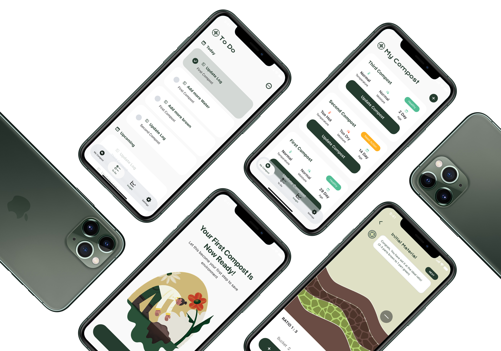
Bali is known for its beauty, but beneath the surface lies a complex waste management challenge. When we started, we aimed to create a measurable shift in how people handle waste. While local awareness is high, we discovered a major gap: people want to help, but they lack the confidence to manage waste at home.
COMPAST (Compost Assistant) was designed to be the missing link, turning environmental intent into a seamless, successful household habit.
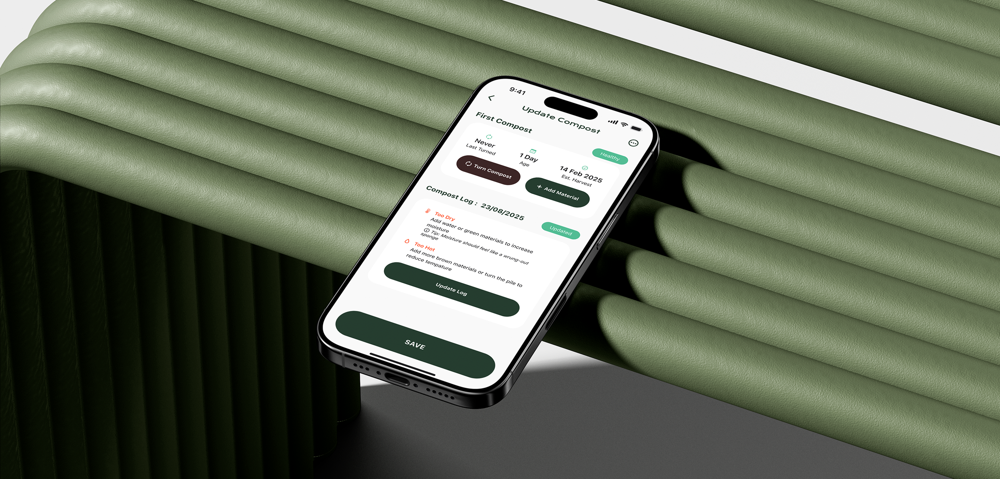
Our journey began at Sungai Watch (a nonprofit organization focusing on river cleanup), where the sheer scale of the waste crisis became a reality. We volunteered on one of their regular cleanup program and saw mountains of river waste and realized that while large-scale collection is vital, the real bottleneck is manpower. To truly help, we needed to move "upstream" and solve the problem at the source: household.
To understand how to make habits stick, we visited Banjar Segara (Balinese neighborhood community). We found a community with deep-rooted sustainability habits, but they were facing a massive hurdle: the imminent closure of TPA Suwung, Bali's largest landfill. This created an immediate, toxic crisis for organic waste. While there are several systems exist to tackle the inorganic waste problem (people could "sell" plastic waste via waste bank, etc.), organic waste was being left to rot. Existing services were either too expensive for the average resident or communal bins were simply too small to handle the volume. We realized that if we could help individuals manage organic waste in small spaces, we could relieve the entire community's burden.
Top: River cleanup program with Sungai Watch. Bottom: Waste collected around Mangrove Point.
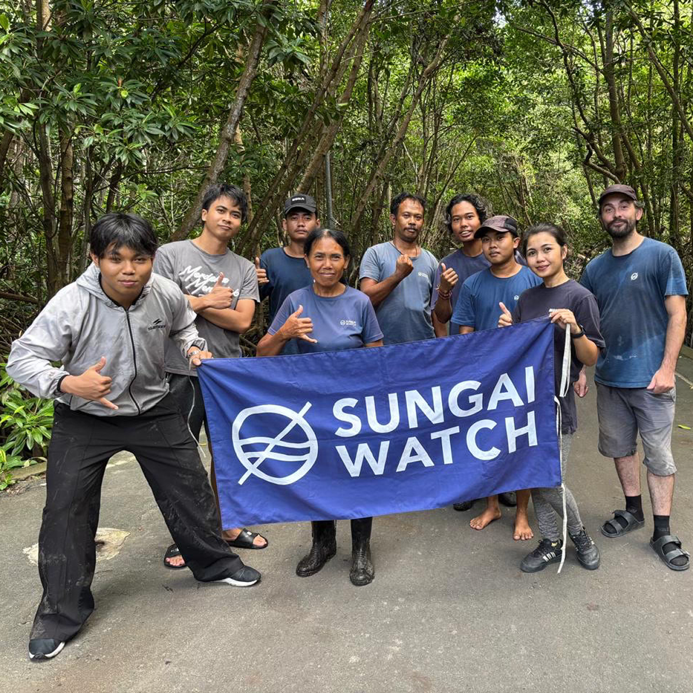
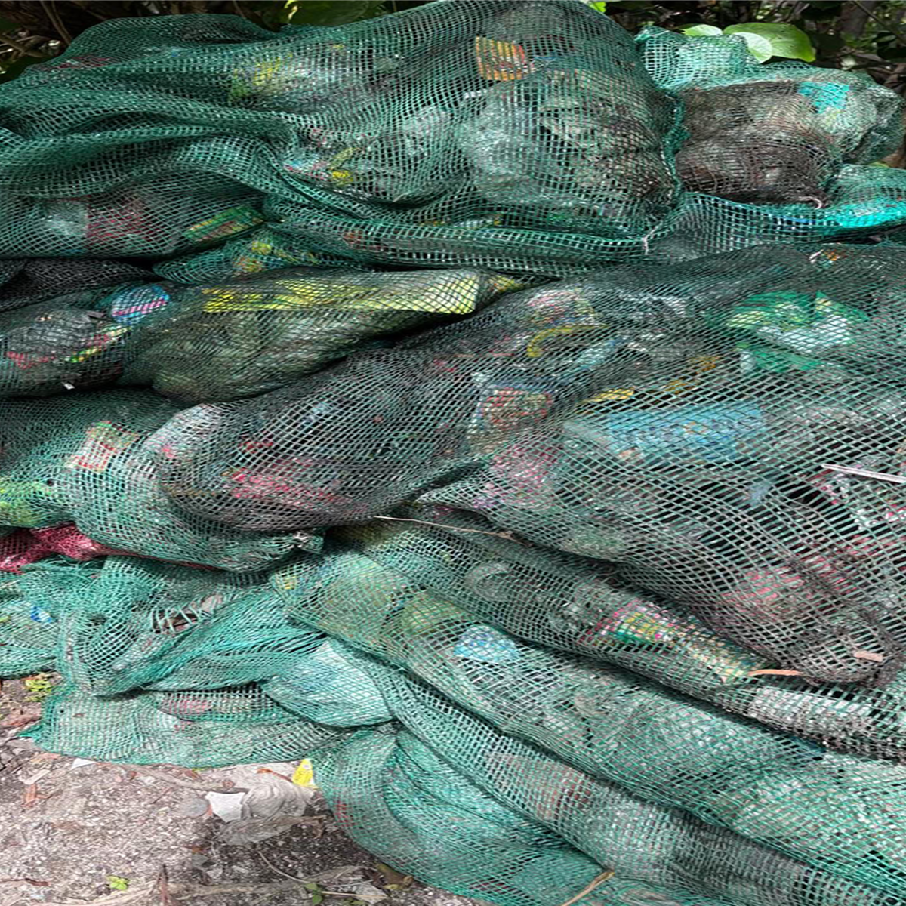
News of TPA Suwung closure
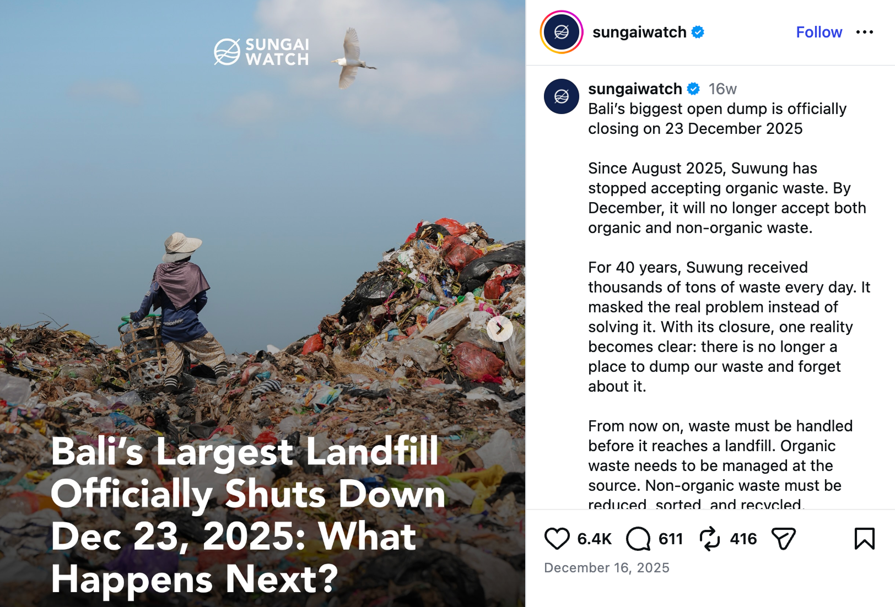
Having narrowed our focus to organic waste, we sought expert guidance from Urban Compost. Meeting an owner with a biology background changed our entire design philosophy. They introduced us to Hot Composting, which is a scientific, high-speed method that turns waste into soil in weeks.
We learned that you don't need complex sensors since nature provides its own "UI feedback" through warmth and smell. We realized we didn't need to build a data-heavy app. Instead, we needed a Sensory UX that helped beginners "read" the biology of their waste. Based on their expert feedback and continuous user testing, we shifted our focus from "tracking" to "guiding."
Top: Our team at Urban Compost with founder Buya and Compost Supervisor Timothy. Bottom: The final product, ready-to-use compost.
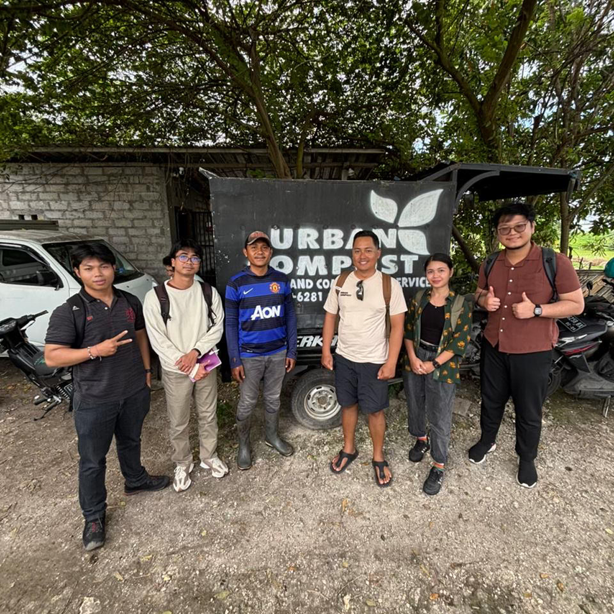
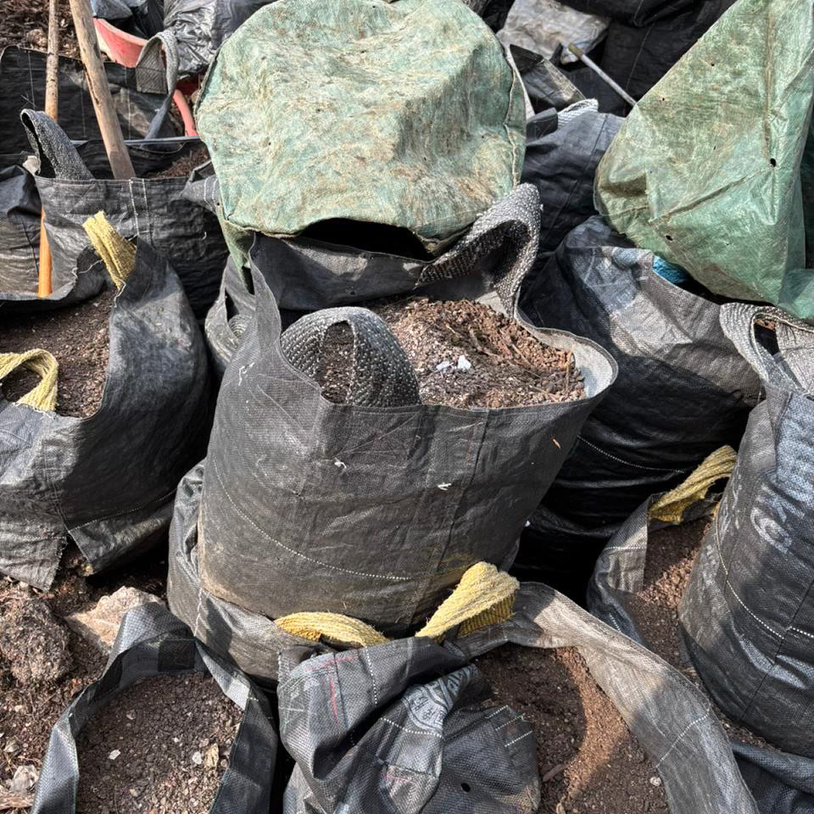
Early in our design process, our onboarding was incredibly detailed. We planned to offer multiple composting methods and asked users for complex inputs to better determine categorization (or so, we thought). However, user testing—including feedback from the Urban Compost team—showed that beginners were overwhelmed.
Reflecting on desk research and efficiency of the Hot Composting method, we made a bold decision: We stripped away choice and focused exclusively on Hot Composting. By eliminating "Decision Fatigue," we transformed a confusing setup into a single, foolproof path. We stopped trying to be an encyclopedia of composting and started being a dedicated assistant for one method that works best for limited spaces and quick results.
Early lo-fi of onboarding and "Add Material" screen
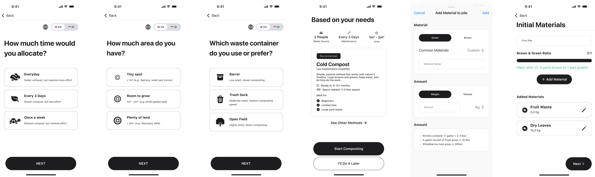
Hi-fi v1 of onboarding screen and "Add Material" screen
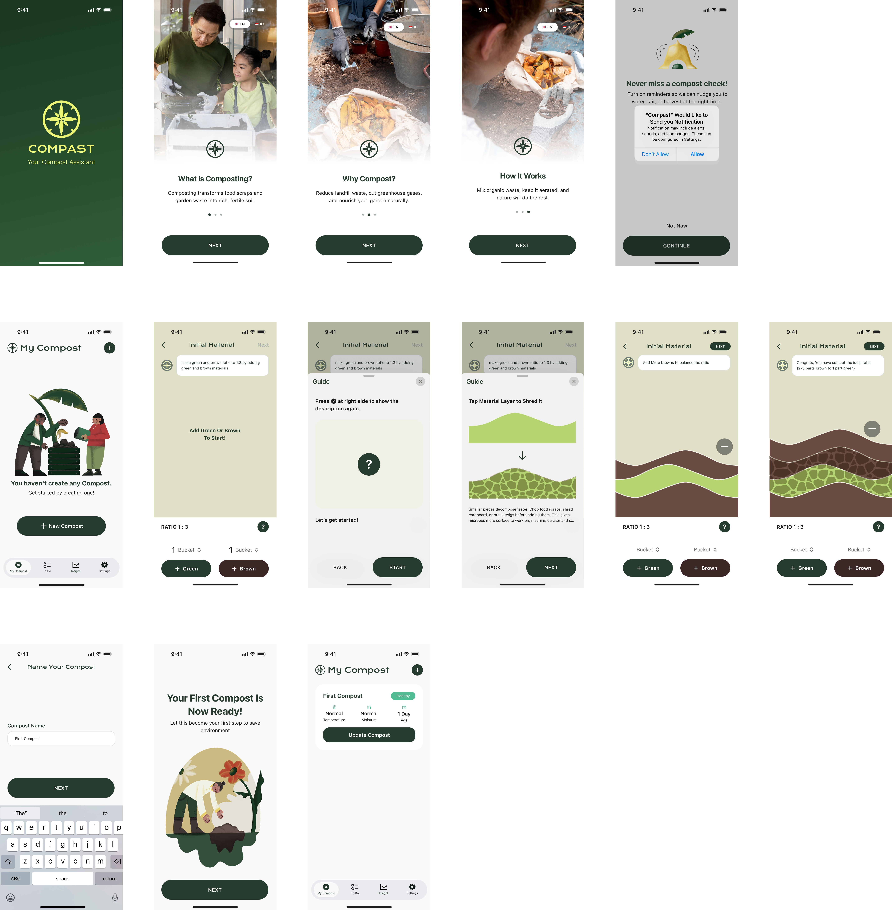
Translating a 30-day biological process into a digital flow required a detailed System Map. Using research from Urban Compost and technical journals, I developed a dynamic algorithm that manages the "Hot Composting" cycle.
I discarded the traditional "Setup" phase to reduce friction. Instead, users land directly on a "My Compost" Hub, where the app immediately begins guiding them through three critical stages of the 30-day cycle: Initialization (Ratio Balancing), Active Management, and Harvesting. This mapping ensured that the app logic followed the actual decomposition stages of organic waste without overwhelming the user with the underlying science.
A system map illustrating how qualitative sensory inputs are translated into quantitative multipliers to drive the Compast engine
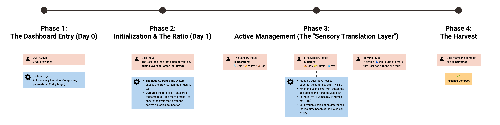
A major design challenge was bridging the gap between scientific composting requirements and household reality. Most beginners don't own compost thermometers. To solve this, I designed a Sensory Translation Layer.
We replaced technical metrics with qualitative "feel" assessments. Behind the scenes, the app maps these sensory inputs to specific data points. For example, selecting "Warm" maps to 55°C to trigger a 2x activity multiplier, while "Sponge Test" (Humid) ensures moisture baseline stays at 1.0. This allows the app to maintain professional-grade biological tracking while the user only performs simple tactile checks.
Early hi-fi of intuitive sensory toggles in Temperature and Moisture selection cards.
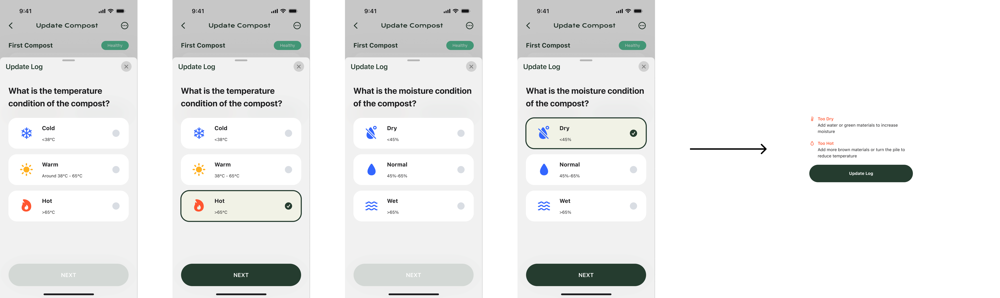
The final Compast app provides a streamlined toolkit designed to keep users consistent and motivated:
Hi-fi iteration v1
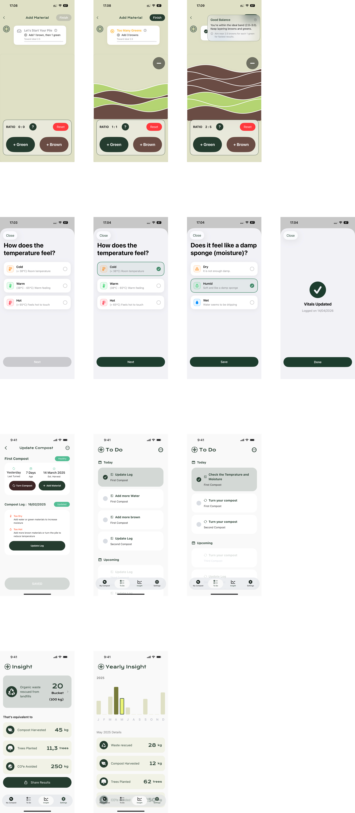
In this collaborative project, I acted as a multidisciplinary designer, touching every phase of product lifecycle—from muddy field research to final App Store build. My role was to ensure that the complex biological requirements of composting were translated into a seamless, user-friendly digital interface.
A glimpse into data structures and formulas; synthesizing technical composting journals and field data into a functional backend architecture
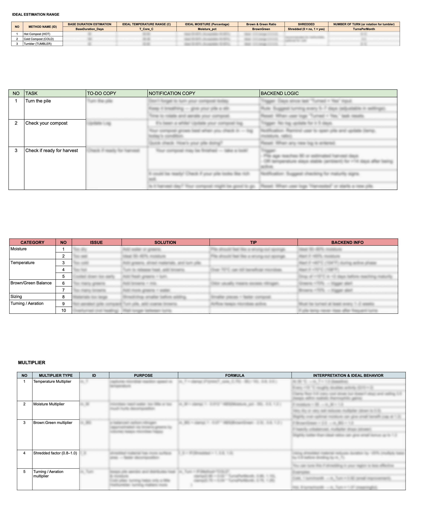
Custom illustrations made in Procreate
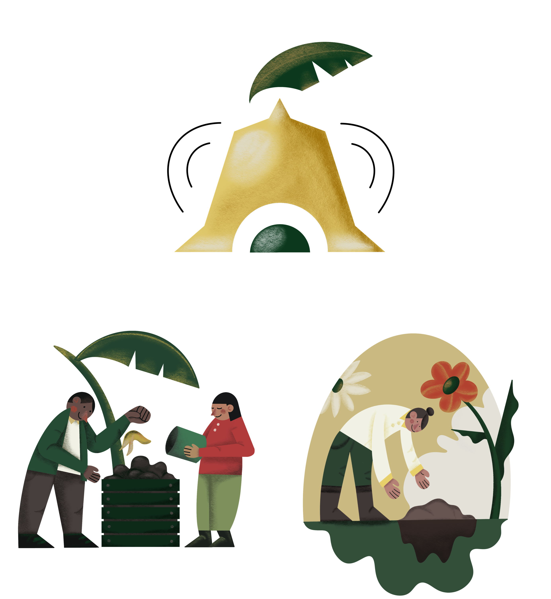
Compast is now live on the App Store, but the launch was only our first milestone. Beyond designing the interface, I contributed to a detailed quarterly roadmap and business plan to ensure the product's long-term viability. Our strategy involves continuous iteration based on real-world usage and rigorous validation with biology experts to refine our guidance algorithms.
Our immediate roadmap focuses on closing the loop between waste and value. We are currently developing a marketplace feature that allows users to buy high-quality compost from verified partners, using a standardized grading system to ensure quality. Looking further ahead, we aim to facilitate peer-to-peer compost transactions. By turning organic waste into a tradable resource, we are moving Compast toward a circular economy model—transforming a household chore into a meaningful contribution to a sustainable, community-driven ecosystem.